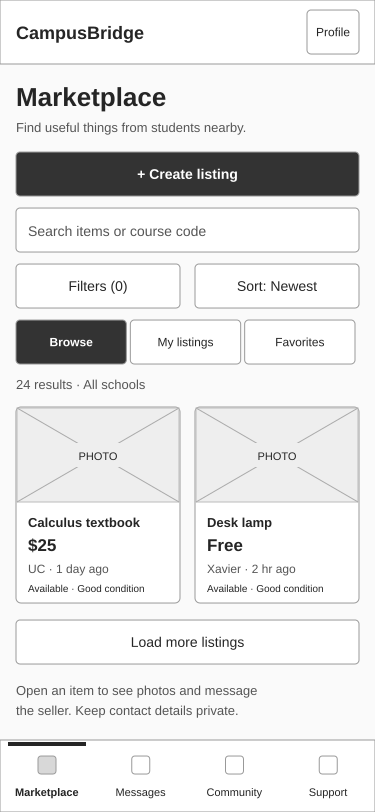
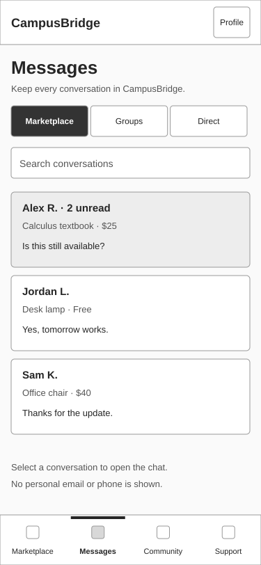
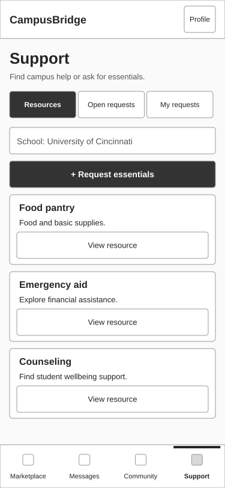
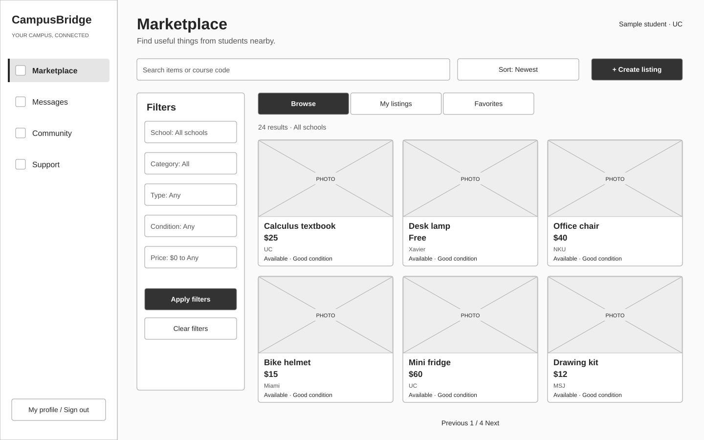
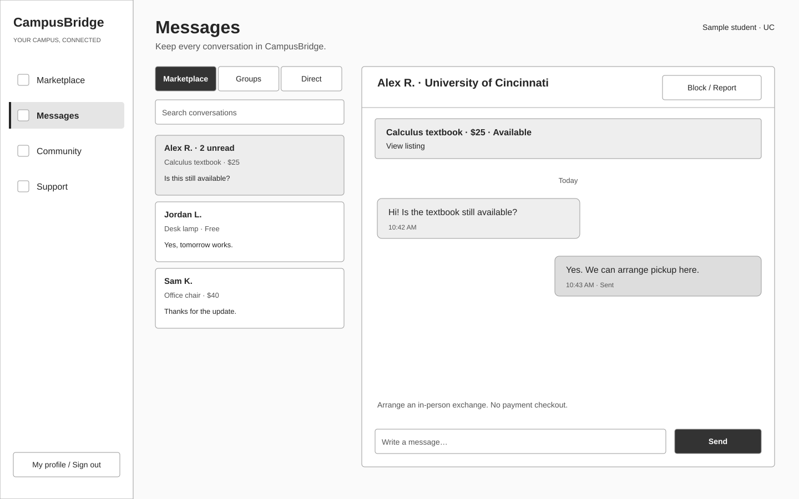
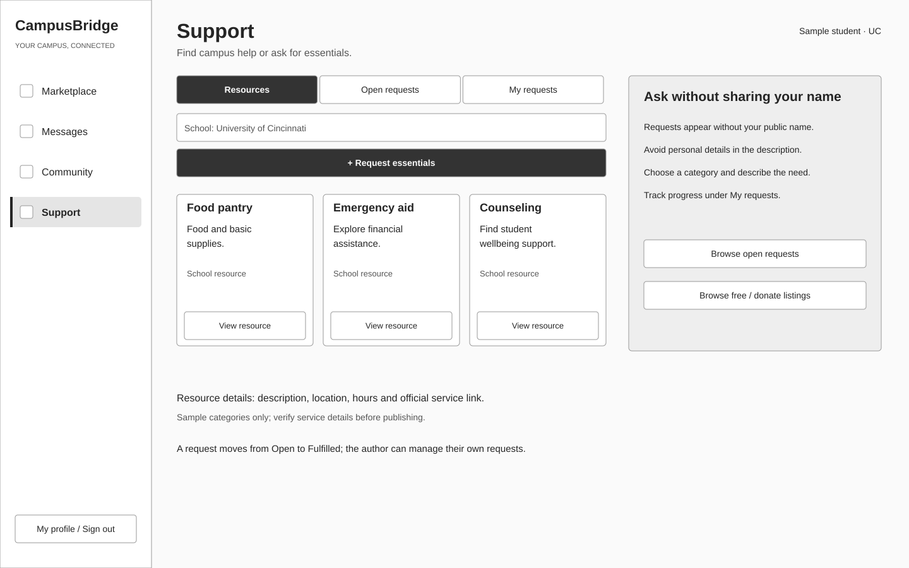
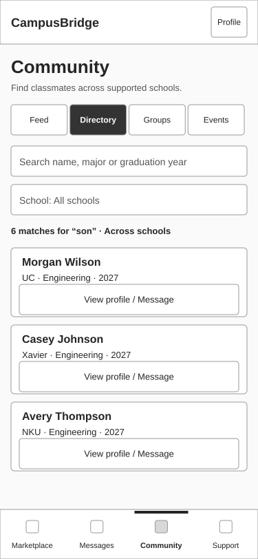
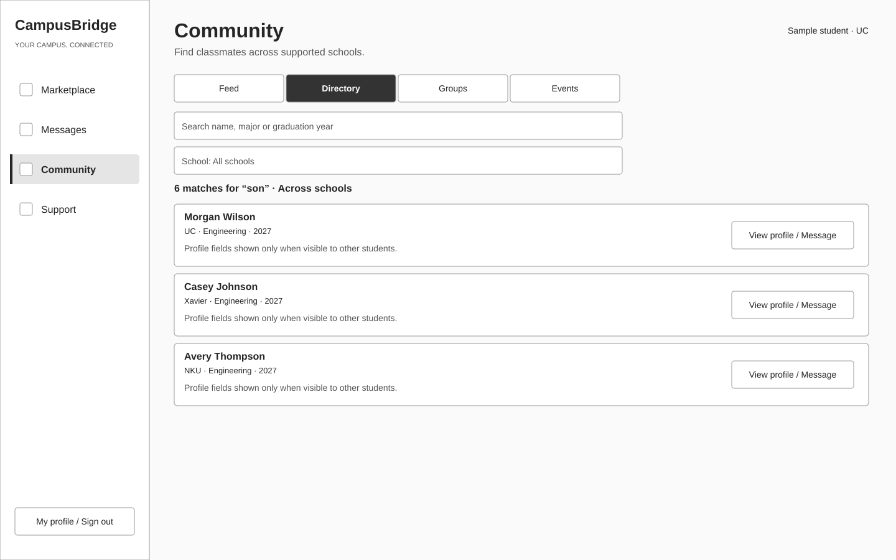
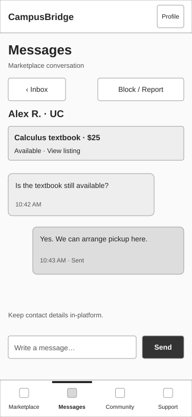

CampusBridge / Sprint 0 / S0-4 / 17 September 2026
Four tabs. Two screen sizes.
Low-fidelity target wireframes for Marketplace, Messages, Community and Support. Includes directory and mobile chat details. Sample people, listings and resources are fictional. These drawings are design artifacts, not screenshots or a working app.
Review draft. Existing structure and planned behavior are distinguished in the specification and acceptance notes. Team review and sprint demo remain pending. Open an image for its full-size vector.
11 frames · 375px mobile / 1440px desktop
Marketplace Mobile
375 × 812
M1 Search and filter → item detail → Message seller. M2 Create listing → up to five photos → publish. Filter controls become a sheet on mobile.
Download SVG

C1 Desktop keeps inbox and chat together; mobile opens a separate conversation with Back. Send status and retry stay beside the message. Group inbox is roadmap work.
Download SVG

S1 Filter resources by school. S2 Request essentials → anonymous public request → My requests → fulfilled. Free / donate links to Marketplace; no payment flow.
Download SVG
Marketplace Desktop
1440 × 900
M1 Search and filter → item detail → Message seller. M2 Create listing → up to five photos → publish. Filter controls become a sheet on mobile.
Download SVG
Messages Desktop
1440 × 900
C1 Desktop keeps inbox and chat together; mobile opens a separate conversation with Back. Send status and retry stay beside the message. Group inbox is roadmap work.
Download SVG
Support Desktop
1440 × 900
S1 Filter resources by school. S2 Request essentials → anonymous public request → My requests → fulfilled. Free / donate links to Marketplace; no payment flow.
Download SVG
Directory Mobile
375 × 812
D1 Partial-match directory search across schools. No email or phone is displayed. Contact lookup policy remains Open Question 5; this sketch does not settle it.
Download SVG
Directory Desktop
1440 × 900
D1 Partial-match directory search across schools. No email or phone is displayed. Contact lookup policy remains Open Question 5; this sketch does not settle it.
Download SVG
Conversation Mobile
375 × 812
C2 Mobile chat: composer above navigation; when the keyboard opens, keep composer visible in the visual viewport and scroll messages. Back restores inbox position.
Download SVG
Review the layout, then the flow
Primary navigation stays in the same order. Mobile has a bottom bar; desktop has a 240px sidebar. At intermediate widths, retain the existing 72px rail. Directory belongs to Community. Every action must provide loading, empty, failure and success feedback.
Read the specification for flow annotations, accessibility acceptance, state designs, requirement mapping and remaining product decisions. Grayscale deliberately leaves school branding to its separate design task.